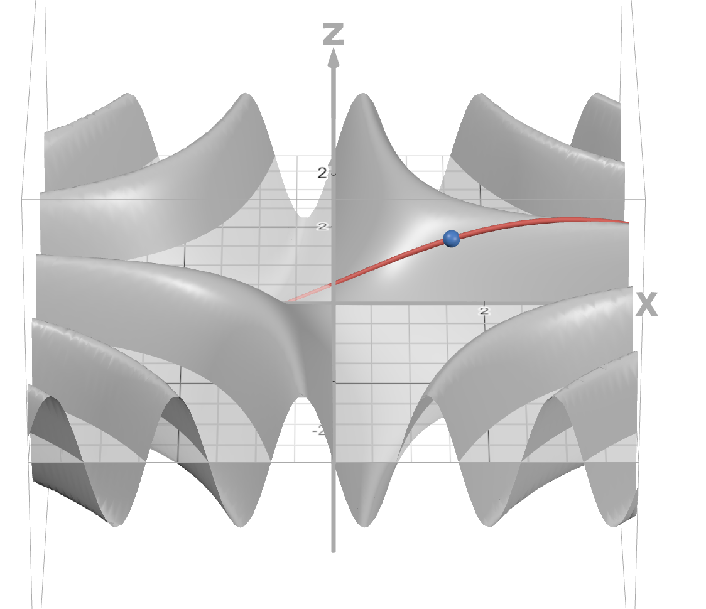
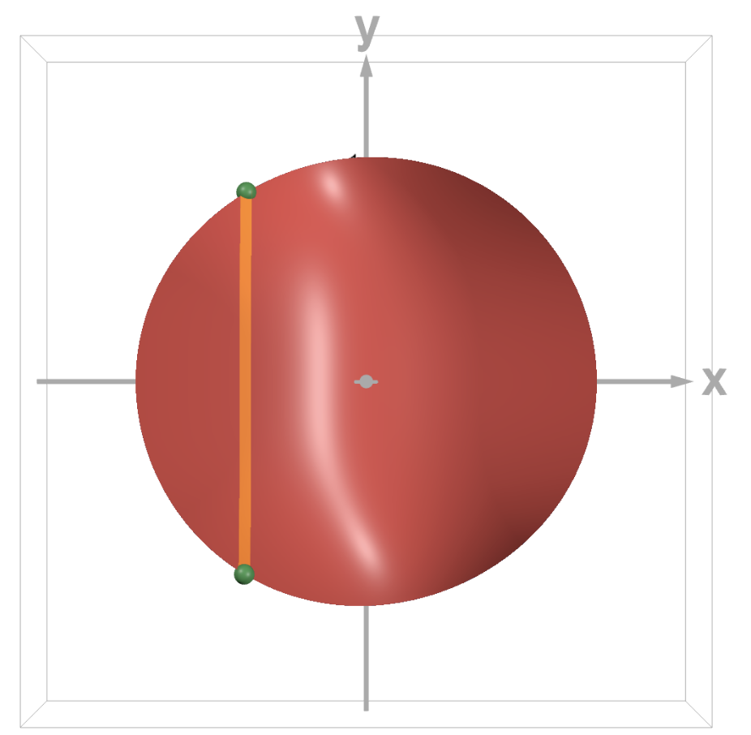

unnamed multivar website: Interactive and simple multivariable calculus explanations!
This is a work in progress, and a continuation of unnamed calc website, my website for single-variable calculus explanations.
Table of Contents
Website Update History (Last update: )
Important: You might have to refresh the tab to view the latest updates to this website.
2025-03-24: “Double Integrals” Update
This update focuses on the different types of double integrals, as well as Lagrange multipliers, a technique to solve some types of optimization problems. Current progress: 16/37 sections covered.
New Sections
- New sections added:
Section Improvements
- Unit 1: Directional Derivatives and Gradient: now explains that gradients are perpendicular to contour lines
2025-03-12: “More Multivariable Derivative Stuff” Update
This update features more sections about multivariable derivatives and their applications. Current progress: 12/37 sections covered.
New Sections
2025-03-07: “Partial Derivatives” Update
This update features new sections about partial derivatives, the extension of the derivative to functions of multiple variables! Current progress: 9/37 sections covered.
New Sections
2025-03-03: Initial Release
This is the first version of this website to be released. It features some explanations about vectors and the 3D coordinate system. Current progress: 6/37 sections covered.
Website Content
- Unit 1: Vectors and 3D Space: In order to understand many of the concepts in multivariable calculus, you need to know about vectors and how to visualize graphs in 3D space. That’s what this unit is for!
- Guest Explanations: Why should I be the only one making calculus explanations? I plan on letting some of my friends contribute their own calculus explanations to this website. This first release comes with three explanations (Green’s Theorem, Stokes’ Theorem, and Generalized Stokes’ Theorem) from one of my friends Sami.
Website Settings
Switch to a dark theme for those of you studying calculus late at night! (This setting does not affect any of the images on this page, so they will stay bright.)
If the bright images in dark mode bother you, you can invert the colors of graphs using this setting. Warning: this will change the colors of points and curves on each graph, making graph captions inaccurate in some cases.
Scientific Notation Format
Control the way very large and small numbers are displayed on this website. (Primarily intended for those of you who enjoy incremental games!)
What Is This Website?
A note about links on this page: Internal links (links that bring you to another spot on this page) are colored in light blue. External links (links that open a different website) are colored in dark blue. External links will always open in a new tab.
This is a continuation of my single-variable calculus website, unnamed calc website, but this time with multivariable calculus! You can look at that page for more information on what this website is and why I made it.
The content on this page is heavily based on Khan Academy and Paul’s Online Notes. I recommend visiting these sites for more detailed multivariable calculus explanations!
This progress table is based on the Stewart Calculus textbook.
| Unit | Progress |
|---|---|
| 12. Vectors and the Geometry of Space | 6/6 |
| 13. Vector Functions | 0/4 |
| 14. Partial Derivatives | 7/8 |
| 15. Multiple Integrals | 3/10 |
| 16. Vector Calculus | 0/9 |
| All Units |
Unit 1: Vectors and 3D Space
Vector Basics
Multivariable calculus involves functions that have multiple inputs or output a list of multiple numbers. Because of this, the concept of vectors appears a lot in multivariable calculus.
There are two ways of thinking about what a vector is:
- A vector is a list of numbers (but can sometimes contain other things).
- A vector is a quantity with magnitude and direction.
I’m going to focus on the second way of thinking about vectors: that a vector is a quantity with magnitude and direction. What exactly does that mean? Usually, we think of vectors graphically as arrows on the coordinate plane.
I will be discussing 2D vectors here (vectors with 2 values that can be drawn in 2 dimensions), but a lot of the concepts are similar for 3D vectors and vectors with even more dimensions.

The arrow from point A to point B is a vector since it has a magnitude (i.e. length) and a direction. It is a 2D vector since it is on a 2-dimensional coordinate plane. (Note: vectors can begin anywhere on the coordinate plane. In this diagram, point A is at the origin, but it doesn’t have to be. What determines the vector is the displacement between the two points.)
2D vectors have an \(x\)-component and a \(y\)-component. The \(x\)-component is the horizontal displacement of the vector and the \(y\)-component is the vertical displacement. In the diagram above, the vector has an \(x\)-component of 3 and a \(y\)-component of 4. The \(x\)-component and \(y\)-component can also be negative (represented by an arrow pointing to the left or down respectively).
Vectors are usually notated with a letter in bold, such as \(\mathbf{v}\). There are multiple ways to notate the components of a vector. One way is to write them like coordinates, so for example the vector in the above diagram is \(\mathbf{v} = (3, 4)\). The first value is the \(x\)-component and the second value is the \(y\)-component of the vector.
Another way is to write the vector in terms of the unit vectors \(\mathbf{i} = (1, 0)\) and \(\mathbf{j} = (0, 1)\). In this notation, our vector can be written as \(\mathbf{v} = (3, 4) = (3, 0) + (0, 4) = 3\mathbf{i} + 4\mathbf{j}\). The coefficient of \(\mathbf{i}\) is the \(x\)-component and the coefficient of \(\mathbf{j}\) is the \(y\)-component of the vector.
To find the magnitude (i.e. length) of a vector (denoted by \(||\mathbf{v}||\)), we can use the Pythagorean Theorem. Notice how in the diagram above, the \(x\)- and \(y\)-components form a right triangle with the vector. In this case, the magnitude of the vector \(\mathbf{v} = (3, 4)\) is \(||\mathbf{v}|| = \sqrt{3^2 + 4^2} = 5\).
Vector operations
We can multiply a vector by a scalar (i.e. a single number). To do that, we just multiply each component of the vector by the scalar. If \(\mathbf{v} = (1, 2)\), then \(4\mathbf{v} = (4\cdot 1, 4\cdot 2) = (4, 8)\). This scalar can also be -1, i.e. we can find the negative of a vector by multiplying all components by -1. In our example, \(-\mathbf{v} = (-1, -2)\).
We can add two vectors by adding their components together. For example, if \(\mathbf{v} = (1, 2)\) and \(\mathbf{w} = (3, 4)\), then \(\mathbf{v} + \mathbf{w} = (1 + 3, 2 + 4) = (4, 6)\).
To add two vectors visually, first place the tail of the second vector at the head of the first vector. Then the sum of the vectors will be the vector that goes from the tail of the first vector to the head of the second vector.

Similarly, we can subtract two vectors by subtracting their components. If \(\mathbf{v} = (1, 2)\) and \(\mathbf{w} = (3, 4)\), then \(\mathbf{w} - \mathbf{v} = (3 - 1, 4 - 2) = (2, 2)\).
There are two ways to visualize this: the first is to add the vectors \(\mathbf{w}\) and \(-\mathbf{v}\) to get \(\mathbf{w} - \mathbf{v}\).
The second way is to draw the vectors for \(\mathbf{v}\) and \(\mathbf{w}\). The vector that goes from the head of \(\mathbf{v}\) to the head of \(\mathbf{w}\) is \(\mathbf{w} - \mathbf{v}\).

This diagram shows that \(\mathbf{v} + (\mathbf{w} - \mathbf{v}) = \mathbf{w}\).
The 3D Coordinate System
In previous calculus classes, you dealt with functions involving a single input and a single output. These are known as single-variable functions, and the way we typically visualize them is with 2-dimensional graphs: one dimension for the input variable and one dimension for the output variable.
But in multivariable calculus, we often deal with functions with more than one input (these are known as multivariable functions). To visualize these functions, we need more than 2 dimensions!
Often, we use 3-dimensional graphs to visualize functions with two inputs. But how do 3D graphs work? That’s what I’m going to discuss now!
In two-dimensional graphs, we have two axes: the \(x\)-axis and the \(y\)-axis. When we introduce a third dimension, we need to add a new axis: the \(z\)-axis, that is perpendicular to the other two axes.

In two dimensions, the point \((x, y)\) would be plotted \(x\) units along the \(x\)-axis and \(y\) units along the \(y\)-axis. In three dimensions, we do something similar: the point \((x, y, z)\) would be plotted \(x\) units along the \(x\)-axis, \(y\) units along the \(y\)-axis, and \(z\) units along the \(z\)-axis.
This is the point \((\class{blue}{1}, \class{green}{2}, \class{purple}{3})\) plotted in 3D space. It is plotted 1 unit along the \(x\)-axis, 2 units along the \(y\)-axis, and 3 units along the \(z\)-axis.
We can also create vectors in 3D space. For example, this is the vector \((1, 2, 3)\):

In 3D space, the unit vectors are \(\mathbf{i} = (1, 0, 0)\), \(\mathbf{j} = (0, 1, 0)\), and \(\mathbf{k} = (0, 0, 1)\).
In 3D space, there are three coordinate planes - planes formed by two of the axes:
- The \(xy\)-plane contains the \(x\)- and \(y\)-axes and contains all points with a \(z\)-coordinate of 0.
- The \(yz\)-plane contains the \(y\)- and \(z\)-axes and contains all points with an \(x\)-coordinate of 0.
- The \(xz\)-plane contains the \(x\)- and \(z\)-axes and contains all points with a \(y\)-coordinate of 0.

A graph of the \(xy\)-plane.
A graph of the \(yz\)-plane.

A graph of the \(xz\)-plane.
Vectors: Dot Product
There are some operations we can perform between two vectors. One of the most common operations is the dot product. The dot product of two vectors \(\mathbf{a}\) and \(\mathbf{b}\) is denoted by \(\mathbf{a} \cdot \mathbf{b}\).
There are two ways of thinking of the dot product.
The dot product as a sum of products
To find the dot product of two vectors, you multiply corresponding components together, then sum up all of the products. Here’s an example:
Notice that the result of a dot product is a scalar (a single number), not a vector.
The geometric meaning of the dot product
The dot product can also be found with this formula:
In this formula, \(\theta\) is the angle between the two vectors \(\mathbf{a}\) and \(\mathbf{b}\).
Notice that \(\cos(\theta)\) is close to 1 if \(\theta\) is close to 0, and \(\cos(\theta)\) is close to 0 if \(\theta\) is close to 90 degrees. So in general, if two vectors are pointing in roughly the same direction, their dot product will be larger. If two vectors are pointing in exactly the same direction, then the dot product is the product of the vectors’ magnitudes.
If \(\theta\) is exactly 90 degrees (or \(\frac{\pi}{2}\) radians), then \(\cos(\theta) = 0\). This means that the dot product between two perpendicular vectors is zero. Two vectors are called orthogonal if this is the case (i.e. if \(\mathbf{a} \cdot \mathbf{b} = 0\), then \(\mathbf{a}\) and \(\mathbf{b}\) are orthogonal vectors).
The dot product can also be negative if \(\cos(\theta)\) is negative. This happens when \(\theta\) is in between 90 and 180 degrees (\(\frac{\pi}{2}\) and \(\pi\) radians).
Play around with these two unit vectors (vectors with magnitude 1). What do you notice about the dot product?
Control the vectors’ angles using these sliders:
\(\theta \approx\)
\(\theta \approx\)
Dot Product \(\approx\)
Vectors: Cross Product
The cross product is another operation we can perform between two vectors. The cross product of \(\mathbf{a}\) and \(\mathbf{b}\) is denoted by \(\mathbf{a} \times \mathbf{b}\).
While the dot product works with vectors with any number of dimensions (as long as the two vectors have the same number of dimensions), the cross product only works with two 3D vectors.
While the dot product of two vectors is a scalar, the cross product of two vectors is another vector. Specifically, the cross product of two vectors is a third vector that is perpendicular to the other two vectors.
There are once again two formulas for the cross product.
The cross product as a determinant
The cross product of two vectors can be calculated with a few multiplications and subtractions. If \(\mathbf{a} = (a_1, a_2, a_3)\) and \(\mathbf{b} = (b_1, b_2, b_3)\), then:
This is not an easy formula to remember! Luckily, there is an easier way to remember this, but it does require you to know a little bit about matrices.
This formula can be written as the determinant of a \(3\times 3\) matrix as follows:
The first row of the matrix contains the unit vectors, the second row of the matrix contains the components of the first vector, and the third row contains the components of the second vector.
A matrix is a 2D grid of numbers. Here’s an example of a matrix:
A matrix that has \(m\) rows and \(n\) columns is known as an \(m \times n\) matrix.
Imagine we have this \(2 \times 2\) matrix:
The determinant of this matrix, denoted by \(\det(A)\), is calculated as follows:
The determinant of a \(3 \times 3\) matrix is more complicated:
That just looks like a huge mess at first! Let’s break it down.
The first term in the sum is:
Notice how the exponent on the -1 term is \(\class{red}{1} + \class{blue}{1}\), while the coefficient in front of it is \(a_{\class{red}{1}\class{blue}{1}}\), corresponding to the element on the 1st row and 1st column of the matrix.
What about the determinant part? Notice how we’re finding the determinant of a smaller \(2 \times 2\) matrix. This matrix is just the \(3 \times 3\) matrix \(A\) but without the elements in the 1st row and the 1st column.
The next term is:
Once again, the exponent on the -1 term (\(\class{red}{1} + \class{blue}{2}\)) is the sum of the row and column number of the coefficient \(a_{\class{red}{1}\class{blue}{2}}\). We are multiplying these terms by the determinant of a \(2 \times 2\) matrix which is matrix \(A\) but without the 1st row and 2nd column.
Finally, we see this pattern continue with the last term:
The exponent on the -1 is the sum of the row and column number, and we are once again multiplying by a modified version of matrix \(A\) without the 1st row and 3rd column.
However, this isn’t the only way we can calculate the determinant of \(A\). In the previous example, we used what’s known as the Laplace expansion along the first row of the matrix (since the coefficients \(a_{11}\), \(a_{12}\), \(a_{13}\) come from the first row of matrix \(A\)).
The Laplace expansion works for any row or any column of the matrix! For example, here’s the expansion along the 2nd column:
The geometric meaning of the cross product
Just like the dot product, there is a geometric formula for the cross product:
\(\theta\) is the angle between \(\mathbf{a}\) and \(\mathbf{b}\), and \(\mathbf{n}\) is a unit vector perpendicular to both \(\mathbf{a}\) and \(\mathbf{b}\) (the exact vector to use is based on the right-hand rule - more on that later).
The cross product of two vectors is a third vector that is perpendicular to both of them. However, in 3D space, there are two vectors that are perpendicular to any set of two nonzero vectors. How do we know which one to use?
That’s what the right-hand rule tells us. If you point the index finger of your right hand in the direction of \(\mathbf{a}\), then point your middle finger in the direction of \(\mathbf{b}\), then extend your thumb, your thumb will point in the direction of \(\mathbf{a} \times \mathbf{b}\).

Here’s an example of how we would find the cross product of two vectors.
The cross product \(\mathbf{a} \times \mathbf{b}\) is perpendicular to both the vectors \(\mathbf{a}\) and \(\mathbf{b}\).
Problem: What is the cross product of the vectors \(\mathbf{a} = (5, -2, 8)\) and \(\mathbf{b} = (10, 0, 1)\)?
Using the formula directly:
Using the determinant form of the formula:
Don’t forget the negative sign before the second term when calculating the determinant (in this case, the coefficient of \(\mathbf{j}\))!
3D Space: Equations of Lines
How do we graph a line in 3D space? Before we answer this, let’s first think about how we could graph a line in 2D.
In two dimensions, we can graph a line by choosing a point on that line, then specifying the slope of the line. This is the point-slope form of a line: the line that passes through the point \((x_0, y_0)\) with slope \(m\) is:
In three dimensions, however, we can’t just describe the slope of a line with one number. Instead, we need to use a 3D vector to describe the direction that the line goes in.
So what we could do instead is take two points that are on the line, then draw a vector between those two. Let’s see how this would work in 2D first.
Let’s say we want to find the equation of the line that passes through point \(A = (1, 2)\) and point \(B = (2, 5)\). We can get a vector parallel to this line by subtracting one point from the other. In this case, that vector would be \(\mathbf{v} = (2-1, 5-2) = (1, 3)\).
Now let’s imagine a point moving with this velocity vector. As time passes, the point will trace out our line.
How can we describe the movement of this point with a function? We can use a vector-valued function - a function that outputs a vector.
Imagine a point at point \(A\) and moving towards point \(B\). Its velocity vector would be equal to the vector \(\mathbf{v}\) we found before. Its position at time \(t\) would be:
\(\mathbf{a}\) is the position vector corresponding to point \(A\) (in this case, \((1, 2)\)).
This is known as the vector form for the equation of a line. As \(t\) ranges across all real numbers (negative and positive), the point corresponding to \(f(t)\) will draw out the line.
\(t =\)
We can generalize this concept to three dimensions. Let me demonstrate this with an example:
Problem: What is the equation of the line that passes through the points \(A = (-2, 3, 2)\) and \(B = (3, 0, 1)\)?
First, we need to find a vector that is parallel to the line. The easiest way to do this is to find the vector that goes from point \(A\) to point \(B\) (since this vector is on the line, it will also be parallel to the line). To find this vector, we subtract the coordinates of point \(A\) from point \(B\).
The vector \(\class{green}{\mathbf{v} = (5, -3, -1)}\) starts at point \(A\) and ends at point \(B\), and it is parallel to the line since it’s on the line.
The vector form for the equation of a line in 3D space is:
\((x_0, y_0, z_0)\) is a point on the line (with \(\mathbf{r_0}\) being the corresponding position vector), and \(\mathbf{v} = (a, b, c)\) is a vector that is parallel to the line. Just like with the 2D equation, as \(t\) ranges across all real numbers, the vector \(\mathbf{r}\) traces out the line.
Back to our example now. \(\mathbf{r_0}\) can be the position vector corresponding to either of our points. So for our example, the vector form based on point \(A\) is:
And the vector form based on point \(B\) is:
This is not the only way we can describe a line in 3D. We can convert this vector form into a set of parametric equations:
This is the parametric form for the equation of a line. For our problem, the parametric form based on point \(A\) is:
Based on point \(B\), the parametric equations are:
Finally, if we solve for \(t\) in each of the equations in the parametric form, we get these equations:
The right-hand sides of all three of these equations are equal to \(t\), so they are equal to each other. Therefore:
This is the symmetric equation of a line. In this case, the symmetric equations that pass through \((-2, 3, 2)\) and \((3, 0, 1)\) are:
This equation is using point \(A\) for the coordinates \((x_0, y_0, z_0)\).
This equation is using point \(B\) for the coordinates \((x_0, y_0, z_0)\).
3D Space: Equations of Planes
We can also find the equations of planes in 3D space.
One way to uniquely identify a plane in 3D is to specify three points on that plane (as long as they’re not on the same line). However, to actually find the equation of a plane, there is another, more helpful way to define a plane.
All we need is one point on the plane and a normal vector to that plane (a vector perpendicular to the plane).
We can define a plane using a point on the plane and a normal vector.
Let’s call this point \(P_0\), the vector corresponding to this point \(\mathbf{r_0}\), and the normal vector \(\mathbf{n}\).
Why is this useful? Because if we choose a second point on the plane, then draw a vector from the first point to the second, that vector will lie completely within the plane. So this vector will be orthogonal to the normal vector, which means that the dot product of the two vectors will be zero.
The normal vector and the vector between the two points are orthogonal, so their dot product is zero.
So we can define this plane as the set of all possible points \(P\) such that the vector between \(P\) and \(P_0\) is orthogonal to the normal vector (i.e. the dot product is zero). If we define the vector \(\mathbf{r}\) to be the vector corresponding to \(P\), this means:
This is the vector equation of a plane. If we write out the components of the vectors with \(\mathbf{n} = (a, b, c)\), \(\mathbf{r} = (x, y, z)\), and \(\mathbf{r_0} = (x_0, y_0, z_0)\), we get:
This is the scalar equation of a plane.
Problem: What is the equation of the plane that passes through the points \(A = (4, -2, 3)\), \(B = (0, 1, 3)\), and \(C = (-1, -5, 1)\)?
First, we need to find a normal vector for this plane. How could we do this?
If we had two vectors that were on the plane, then found the cross product of those two vectors, that would give us a vector that is perpendicular to both of those vectors (and the plane itself), which would be a normal vector!
So let’s find two vectors that are on the plane. We can do that by finding vectors between two of our points. Here’s the vector that goes from point \(A\) to point \(B\):
And here’s the vector that goes from point \(A\) to point \(C\):
These are not the only two vectors we can use; there are many more possible pairs of points we can use to define our vectors.
Now let’s find the cross product of these vectors:
Remember that in the scalar equation of the plane \((a,b,c)\) is the normal vector and \((x_0, y_0, z_0)\) is any point on the plane (we’ll use point \(A\) for this example, but points \(B\) and \(C\) would also work). So the equation is:
3D Space: Quadric Surfaces
Quadric surfaces are graphs in 3D space that are defined by an equation in the form:
Here, \(P(x, y, z)\) is a quadratic polynomial in terms of \(x\), \(y\), and \(z\). This can also be written as:
The values \(A\) through \(J\) are constants.
Here are some examples of different types of quadric surfaces, along with their general equations.
Ellipsoid, \(\displaystyle\frac{x^2}{a^2} + \frac{y^2}{b^2} + \frac{z^2}{c^2} = 1\)
Note: If \(a = b = c\), then the ellipsoid is a sphere.
Cone, \(\displaystyle\frac{x^2}{a^2} + \frac{y^2}{b^2} = \frac{z^2}{c^2}\)

Cylinder, \(\displaystyle\frac{x^2}{a^2} + \frac{y^2}{b^2} = 1\)

Hyperboloid of One Sheet, \(\displaystyle\frac{x^2}{a^2} + \frac{y^2}{b^2} - \frac{z^2}{c^2} = 1\)

Hyperboloid of Two Sheets, \(\displaystyle-\frac{x^2}{a^2} - \frac{y^2}{b^2} + \frac{z^2}{c^2} = 1\)

Elliptic Paraboloid, \(\displaystyle\frac{x^2}{a^2} + \frac{y^2}{b^2} = \frac{z}{c}\)

Hyperbolic Paraboloid, \(\displaystyle\frac{x^2}{a^2} - \frac{y^2}{b^2} = \frac{z}{c}\)

Contour Maps and Level Curves
Contour maps are an alternative to graphing functions of two variables. Instead of using three dimensions to graph both the inputs and outputs of the function, we use two dimensions and graph all input points that result in a certain output.
This will make more sense with an example. Here’s how we would create a contour map for the function \(f(x, y) = x^2 + y^2\).
First, we graph all of the input points that result in \(f(x, y)\) having a certain value (let’s say 1). Here’s what that looks like:

These are all of the input points \((x, y)\) which will cause \(f(x, y) = x^2 + y^2\) to equal 1. This is just the graph of \(x^2 + y^2 = 1\).
A curve like this is known as a level curve, contour line, or contour curve.
Now let’s do the same, but with a different value. Here’s what the graph looks like after adding the level curve for \(f(x, y) = 2\):
We’ve added the input points \((x, y)\) which will cause \(f(x, y) = x^2 + y^2\) to equal 2.
We can continue to add these level curves. Here’s the result after adding a few more level curves:
This is just one of the possible contour maps we can create for the function \(f(x, y) = x^2 + y^2\). We can create different contour maps using different level curves. For example, here’s a contour map, this time going by intervals of 2 (so we have level curves for \(f(x, y) = 2\), \(f(x, y) = 4\), etc.)
Unit 2: Vector-Valued Functions
Vector-valued functions are already covered in some detail in Unit 9 of unnamed calc website, so for now, I’m not going to add content to this unit.
I recognize that there are some vector-valued function topics that aren’t covered yet on unnamed calc website (such as 3D vectors, tangent/normal vectors, and curvature), so I will eventually start working on this unit.
Unit 3: Multivariable Derivatives
Functions of Multiple Variables
What is a multivariable function?
Up until now, you’ve likely only studied functions with one input, such as \(f(x) = x^2\). However, in multivariable calculus, we study functions with multiple inputs, such as \(f(x, y) = x^2 + y^2\).
Functions of a single variable take a single input and perform some operations on it to turn it into a different number.
Here’s an example of a single-variable function. Use the slider to control the value of the input \(x\).
\(f(x) = x^2\)
\(x =\)
\(f(x) \approx\)
However, functions of multiple variables (also known as multivariable functions) take in multiple inputs and perform operations on them to produce a single output number.
Here’s an example of a function of two variables. Use the sliders to control the value of the two inputs \(x\) and \(y\).
\(f(x, y) = x^2 + y^2\)
\(x =\)
\(y =\)
\(f(x, y) \approx\)
Multivariable functions can have more than two inputs. For example, here’s one with three variables:
\(f(x, y, z) = x^2 + y^2 + z^2\)
\(x =\)
\(y =\)
\(z =\)
\(f(x, y, z) \approx\)
Graphing multivariable functions
Now let’s move on to graphing functions of two variables. Let’s review how we graph functions of a single variable, such as \(f(x) = x^2\). One way we can do so is by making a table of values for \(x\) and \(f(x)\). Each row in the table corresponds to a point \((x, f(x))\).
| \(x\) | \(f(x)\) | \((x, f(x))\) |
|---|---|---|
| -2 | 4 | (-2, 4) |
| -1 | 1 | (-1, 1) |
| 0 | 0 | (0, 0) |
| 1 | 1 | (1, 1) |
| 2 | 4 | (2, 4) |
We can graph the function by plotting these points.

As we plot more points, the graph becomes a smooth curve. You can imagine the graph of the function as all possible points of the form \((x, f(x)\)).

The equation of this line is \(y = x^2\). Notice how this is the same as the function definition \(f(x) = x^2\), except we’ve replaced \(f(x)\) with \(y\). This is because when we’re graphing a single-variable function in 2D, we use the \(y\)-axis to represent the output values of the function (i.e. the values that \(f(x)\) takes on for all \(x\)-values).
We can do something similar for a function of two variables, such as \(f(x, y) = x^2 + y^2\). This time, instead of plotting the points \((x, f(x))\), we’re going to plot the points \((x, y, f(x, y))\). Since we now have two inputs to our function, we need the first two coordinates to correspond to our inputs, and the third coordinate to correspond to the output.
| \(x\) | \(y\) | \(f(x, y)\) | \((x, y, f(x, y))\) |
|---|---|---|---|
| -1 | -1 | 2 | (-1, -1, 2) |
| 0 | -1 | 1 | (0, -1, 1) |
| 1 | -1 | 2 | (1, -1, 2) |
| -1 | 0 | 1 | (-1, 0, 1) |
| 0 | 0 | 0 | (0, 0, 0) |
| 1 | 0 | 1 | (1, 0, 1) |
| -1 | 1 | 2 | (-1, 1, 2) |
| 0 | 1 | 1 | (0, 1, 1) |
| 1 | 1 | 2 | (1, 1, 2) |
This is the result of graphing these points:

If we graph all possible points of the form \((x, y, f(x, y))\), we get the 3D graph of the function:

The equation of this graph is \(z = x^2 + y^2\), which is the same as the function definition \(f(x, y) = x^2 + y^2\) except that \(f(x, y)\) is replaced with \(z\). That’s because for functions of 2 variables, we use the \(z\)-axis to represent the possible output values of the function, with the \(x\)- and \(y\)-axis being used to represent each input variable of the function.
Graphing functions of 3 or more variables takes at least 4 dimensions this way, so we’re not going to be graphing these types of functions like this.
Intro to Partial Derivatives
Recall that a derivative tells you the rate of change of a function as you change its input. But so far, we’ve only worked with functions that take in one variable as input, like \(f(x) = x^2\). Can we still find derivatives for functions with inputs of multiple variables, like \(f(x, y) = x^2y\)?
The answer is yes, and to do so, we’ll have to use partial derivatives. A partial derivative tells you how a function of multiple variables changes as you change one of the variables.
Problem: Find the partial derivative with respect to \(x\) of the function \(f(x, y) = x^2y\).
We want to find how this function’s value changes as we change \(x\), so let’s keep \(y\) constant. What if we keep \(y\) at a constant value of 2?
Notice that if we fix \(y\) at a value of 2, our function essentially becomes \(f(x) = 2x^2\). We have a function of one variable now, so we can differentiate it as we normally would.
In this case, the derivative with respect to \(x\) is \(4x\). What this means is that when we keep \(y\) at a constant value of 2, as we change \(x\), the expression \(4x\) will tell us the rate of change of the function’s value.
If we keep \(y\) fixed at 2, what happens to the function’s value as we change \(x\)?
\(f(x, y) = x^2y\)
\(x =\)
\(f(x, 2)\) =
Partial derivative (rate of change) with respect to \(x\):
But what if \(y\) wasn’t fixed at 2, but another value? Let’s say that we fixed the value \(y\) at an arbitrary constant \(c\).
Doing this means our function becomes \(f(x) = cx^2\) (we got this by replacing \(y\) in our original function \(f(x,y) = x^2y\) with \(c\)). Differentiating this with respect to \(x\), treating \(c\) as a constant, gives us the expression \(2cx\).
This means that whatever constant \(c\) we set \(y\) to, as we change \(x\), the function’s value changes at a rate of \(2cx\).
When we find expressions for partial derivatives, we don’t change \(y\) to \(c\), so the partial derivative with respect to \(x\) would actually be written as \(2xy\).
Here are two of the ways to denote this partial derivative:
What this is saying is that if we keep \(y\) fixed at a value and change \(x\), the rate of change of \(f(x, y)\) is equal to \(2x\) times whatever value we kept \(y\) at.
A faster way we could have found this partial derivative is to treat \(y\) as a constant and differentiate with respect to \(x\).
Here, we treat \(y\) as a constant, so we don’t need to use the product rule.
Problem: Find the partial derivative with respect to \(y\) of the function \(f(x, y) = x^2y\).
To find the partial derivative with respect to \(y\), we treat \(x\) as a constant and differentiate with respect to \(y\):
Now we’re keeping \(x\) fixed at 2 and changing \(y\). What is the rate of change of the function as we change \(y\)?
\(f(x, y) = x^2y\)
\(y =\)
\(f(2, y)\) =
Partial derivative (rate of change) with respect to \(y\):
Notice how the rate of change stays fixed at 4. This makes sense because the partial derivative of \(f(x, y)\) with respect to \(y\) is \(x^2\), and because we’re keeping \(x\) fixed at 2, in this case the rate of change is \(2^2 = 4\).
Since we’re going to be finding a lot of partial derivatives in multivariable calculus, let’s do some more examples.
Problem: Find the partial derivatives of \(f(x, y) = x^2\sin(y)\).
The partial derivative with respect to \(x\)
To find the partial derivative with respect to \(x\), we treat \(y\) as a constant. Because of this, \(\sin(y)\) is a constant, and so we don’t need to use the product rule. We can simply differentiate \(x^2\) with respect to \(x\) to get \(2x\), then multiply our result by \(\sin(y)\) (which we are treating as a constant).
Notice how we’re not differentiating \(\sin(y)\) with respect to \(y\), since we treat it as a constant when we’re finding the partial derivative with respect to \(x\).
The partial derivative with respect to \(y\)
To find the partial derivative with respect to \(y\), we treat \(x\) as a constant, and so we can also treat \(x^2\) as a constant. So we differentiate \(\sin(y)\) with respect to \(y\), then multiply by \(x^2\).
Notice how we’re not differentiating \(x^2\) with respect to \(x\), since we treat it as a constant when we’re finding the partial derivative with respect to \(y\).
Problem: Find the partial derivatives of \(f(x, y) = \displaystyle\frac{x^3}{x + \ln(y)}\).
The partial derivative with respect to \(x\)
Here, we still have to use the quotient rule even if we treat \(y\) as a constant. When you do use the quotient rule, remember to treat \(y\) as a constant (so for example, the derivative of \(x + \ln(y)\) with respect to \(x\) is simply 1).
The partial derivative with respect to \(y\)
We’re now going to use the quotient rule again, but this time we’re treating \(x\) as a constant.
Interpretations of partial derivatives
I’m going to go over a few different ways you can interpret a partial derivative now. Let’s start with an example.
Problem: How can we interpret the partial derivatives of \(f(x, y) = x^2y\) at the point \((1, 2)\)?
The partial derivative with respect to \(x\)
We found that the partial derivative of \(f(x, y) = x^2y\) with respect to \(x\) is \(2xy\), so if we keep \(y\) fixed at 2, the partial derivative is equal to \(4x\). So at the point \((1, 2)\), the partial derivative with respect to \(x\) is equal to 4.
We can interpret this as saying that if we start at the point \((1, 2)\) and we change \(x\) ever so slightly, the value of the function \(f(x, y)\) changes by about 4 times the amount of change (i.e. the function increases at a rate of 4).
The partial derivative with respect to \(y\)
We found that the partial derivative of \(f(x, y) = x^2y\) with respect to \(y\) is \(x^2\), so if we keep \(x\) fixed at 1, the partial derivative is equal to 1. So at the point \((1, 2)\), the partial derivative with respect to \(y\) is equal to 1.
We can interpret this as saying that if we start at the point \((1, 2)\) and we change \(x\) by a tiny amount, the value of the function \(f(x, y)\) changes by about that amount (i.e. the function increases at a rate of 1).
We can interpret a partial derivative as the slope of a trace of a function’s graph. A trace is the intersection of a 3D graph and a line that is parallel to either the \(x\)- or \(y\)-axis.
For example, here is the trace of the function \(f(x, y) = x^2y\) for \(y = 2\). You can think of this as either the intersection of the plane \(y = 2\) with the function’s graph, or all points on the function’s graph with a \(y\)-coordinate of 2.

We found that the partial derivative of \(f(x, y)\) with respect to \(x\) is 4 at the point \((\class{red}{1}, \class{blue}{2})\), i.e. as we increase \(x\), the function increases at a rate of 4. We can interpret this as saying that the trace of the function for \(y = \class{blue}{2}\) has a slope of 4 at \(x = \class{red}{1}\).
The trace at \(y = 2\) has a slope of 4 at \(x = 1\), as shown by the tangent line.
The partial derivative of \(f(x, y)\) with respect to \(y\) is 1 at the point \((\class{red}{1}, \class{blue}{2})\), i.e. as we increase \(y\), the function increases at a rate of 1. We can interpret this as saying that the trace of the function for \(x = \class{red}{1}\) has a slope of 1 at \(y = \class{blue}{2}\).
The trace at \(x = 1\) has a slope of 1 at \(y = 2\).
Partial Derivatives: Tangent Planes and Linear Approximations
With single-variable functions, we were able to use derivatives to find the tangent lines of functions, and these tangent lines served as linear approximations of functions.
We can do something similar with functions of two variables. However, in 3D space, not only can we find tangent lines, we can also find tangent planes.
Just like a tangent line just barely touches a graph at a single point, a tangent plane just barely touches a 3D graph at a single point.

How can we find this tangent plane? Let’s say that our point is at the coordinates \((x_0, y_0)\). We can consider the traces of this graph for \(x = x_0\) and \(y = y_0\).
These are the traces of the graph at \(\class{blue}{x = x_0}\) and \(\class{green}{y = y_0}\).
Now let’s consider the tangent lines to these traces at \((x_0, y_0)\). As we saw in the previous section, the slopes of these tangent lines are the partial derivatives of \(f(x, y)\) at \((x_0, y_0)\).

These are the tangent lines at \((x_0, y_0)\) to the traces of the graph at \(\class{blue}{x = x_0}\) and \(\class{green}{y = y_0}\).
Specifically:
- The slope of the tangent line to the \(\class{green}{y = y_0}\) trace at \((x_0, y_0)\) is the partial derivative with respect to \(x\) evaluated at \(y = y_0\) (i.e. \(f_x(x_0, y_0)\))
- The slope of the tangent line to the \(\class{blue}{x = x_0}\) trace at \((x_0, y_0)\) is the partial derivative with respect to \(y\) evaluated at \(x = x_0\) (i.e. \(f_y(x_0, y_0)\))
The tangent plane is the plane that contains both of these tangent lines.
To find the equation of this plane, we need to remember the equation of a plane in general:
Now let’s solve for \(z\):
Just to make things simpler, let’s replace the coefficients of \(x-x_0\) and \(y-y_0\) with \(A\) and \(B\) (i.e. \(A = -\frac{a}{c}\) and \(B = -\frac{b}{c}\)).
Now we just need to find the values of \(A\) and \(B\).
If we keep \(y\) fixed at \(y = y_0\), we are essentially just looking at points on the tangent plane where \(y = y_0\). This is just the tangent line to the trace at \(y = y_0\). The slope of this line is \(f_x(x_0, y_0)\).
Therefore, the coefficient \(A\) has to be \(f_x(x_0, y_0)\).
Similarly, if we keep \(x\) fixed at \(x = x_0\), we’re now looking at the tangent line to the trace at \(x = x_0\). The slope in this case is \(f_y(x_0, y_0)\).
Therefore, the coefficient \(B\) has to be \(f_y(x_0, y_0)\). So the equation of the tangent plane is:
\(z_0\) is the \(z\)-coordinate of the point at \((x_0, y_0)\), which is given by \(f(x_0, y_0)\). So our final equation is:
Let’s do an example problem now.
Problem: Find the tangent plane to \(f(x, y) = \sqrt{x} + \ln(y)\) at \((1, 1)\).
First, we need to find the partial derivatives of \(f\) with respect to \(x\) and \(y\).
Now, we can use the equation of the tangent plane by plugging in the point \((1, 1)\) into \(f\) and its partial derivatives:
Therefore, the equation of the tangent plane is:

A graph of the tangent plane to \(\class{red}{f(x, y) = \sqrt{x} + \ln(y)}\) at \(\class{green}{(1, 1)}\).
Tangent planes as linear approximations
Tangent planes also serve as linear approximations of functions. In other words, you can use the tangent plane at a point to approximate the value of that function near that point.
Problem: Given that \(f(x,y) = \sqrt{x} + \ln(y)\), approximate \(f(1.1, 1.1)\) using a linear approximation at \((1, 1)\).
The linear approximation of \(f(x, y)\) at \((1, 1)\) is the tangent plane to the function at that point, which we found was \(z = 1 + \frac{1}{2}(x-1) + (y-1)\). So we just need to find the \(z\)-value of this tangent plane at \((1.1, 1.1)\).
So our approximation of \(f(1.1, 1.1) = \sqrt{1.1} + \ln(1.1)\) is 1.15. For reference, the actual value of \(f(1.1, 1.1)\) is about 1.144.
Experiment with the linear approximation to \(f(x, y) = \sqrt{x} + \ln(y)\) at \((1, 1)\). Use the sliders to control the values of \(x\) and \(y\). What happens to the function’s value and the linear approximation?
\(x =\)
\(y =\)
\(f(x, y) = \sqrt{x} + \ln(y) \approx\)
Linear Approximation = \(1 + \frac{1}{2}(x-1) + (y-1) \approx\)
The linear approximation is the \(z\)-value of the tangent plane at the point \((x, y)\).
The Multivariable Chain Rule
Just like how there is an extension of the derivative to multivariable functions, there is also an extension of the chain rule to multiple variables. Recall that the standard chain rule can be written in one of two ways:
In single-variable calculus, the chain rule is useful to differentiate composite functions of the form \(f(g(x))\). However, in the land of multivariable calculus, we can have functions that look like \(f(g(t), h(t))\). How can we differentiate these functions?
This is where the multivariable chain rule comes into play. In this case, if we have \(x = g(t)\), \(y = h(t)\), and \(z = f(g(t), h(t)) = f(x, y)\), the multivariable chain rule tells us that:
Here, I’m using \(f\) as a shorthand for \(f(g(t), h(t))\).
This chain rule is useful when we have a function \(f\) of two variables with inputs \(g(t)\) and \(h(t)\) that are the outputs of two single-variable functions.
Problem: Let \(z = x^2 + y^3\), where \(x = \sin(t)\) and \(y = 3\ln(t)\). What is \(\displaystyle\dv{z}{t}\)?
You can think of the value of \(z\) as a function of two variables (i.e. \(z = f(x, y) = x^2 + y^3\)) with the variables \(x\) and \(y\) being functions of a third variable \(t\), so we can use the multivariable chain rule for this problem. We first need to find \(\pdv{f}{x}\), \(\pdv{f}{y}\), \(\dv{x}{t}\), and \(\dv{y}{t}\).
Now we can plug these values in:
What does this derivative tell us? This tells us that as we change \(t\), the value of \(z = x^2 + y^3\) (where \(x = \sin(t)\) and \(y = 3\ln(t)\)) changes at a rate of \(2\sin(t)\cos(t) + \frac{81[\ln(t)]^2}{t}\). (Note that we write \(\dv{z}{t}\) instead of \(\pdv{z}{t}\) because \(z\) isn’t directly defined using \(t\).)
Note that there is another way to solve this problem using single-variable calculus: by plugging in the expressions for \(x\) and \(y\) into the expression for \(z\).
Now we can differentiate this with respect to \(t\) directly using the standard chain rule.
Both of these methods work, but one might be easier to use than the other (or you might simply prefer one over the other).
Now let’s look at a special case of this chain rule. If we have \(x = t\), \(y = g(t)\), and \(z = f(x, y) = f(t, g(t))\), then the chain rule becomes:
Note that \(t\) here can really be any variable we want. So we can replace \(t\) with \(x\) to get:
This form of the chain rule can be used when we have \(z = f(x, y)\) and \(y = g(x)\).
Problem: If \(z = \sin(x) + \cos(y)\) and \(y = 4x^5 + \sqrt{x}\), then what is \(\dv{z}{x}\)?
You can think of \(z\) as being a function of two variables: \(z = f(x, y) = \sin(x) + \cos(y)\). However, notice that we don’t have the third variable \(t\) this time: instead, we just have \(y\) being defined in terms of \(x\). Therefore, we can use the special case of the multivariable chain rule we just found.
To use the formula, we need to find \(\pdv{f}{x}\), \(\pdv{f}{y}\), and \(\dv{y}{x}\). Let’s do that now:
Now let’s plug these values in:
We’re not done with the multivariable chain rule just yet. What if we have a situation like \(f(g(s, t), h(s, t))\), where we have a function \(f\) of two variables with inputs \(g(s, t)\) and \(h(s, t)\) that are both outputs of functions of two variables?
The multivariable chain rule in this case, where \(x = g(s, t)\), \(y = h(s, t)\), and \(z = f(x, y)\), is:
Notice that we can differentiate \(z\) with respect to either \(s\) or \(t\), so there are two possible chain rules.
We can also extend the multivariable chain rule to functions of three or more variables. For example, if \(w = f(x, y, z)\) with \(x\), \(y\), and \(z\) being functions of \(t\), then:
Implicit Differentiation with Partial Derivatives
We can use the multivariable chain rule to derive an alternative way to perform implicit differentiation. Let’s start off with how would we normally perform implicit differentiation using single-variable calculus.
Problem: Given that \(x^3 + y^4 = 2\), find \(\displaystyle\dv{y}{x}\) using implicit differentiation.
The way we would normally do this is by differentiating both sides, using the ordinary chain rule for the left-hand side, then solving for \(\dv{y}{x}\).
If you look very closely at this answer, you may notice a potential shortcut: \(3x^2\) is the partial derivative of \(x^3 + y^4\) with respect to \(x\), and \(4y^3\) is the partial derivative of \(x^3 + y^4\) with respect to \(y\).
Using the multivariable chain rule, we can create this shortcut! Let’s say we have a relation in the form \(F(x, y) = c\), where \(c\) is a constant. (In our problem, \(F(x, y) = x^3 + y^4\) and \(c = 2\).) Here, \(y\) is a function of \(x\) (although we often can’t find an explicit formula for \(y\) in terms of \(x\)).
Remember this special case of the multivariable chain rule, which is applicable when \(z = f(x, y)\) and \(y = g(x)\) (which is the exact situation we have here: we have a function of two variables \(F(x, y)\) where \(y\) is a function of \(x\)):
Starting with \(F(x, y) = c\), let’s define \(z = F(x, y)\) and then differentiate both sides with respect to \(x\).
\(F_x\) is the partial derivative of \(F(x, y)\) with respect to \(x\) and \(F_y\) is the partial derivative of \(F(x, y)\) with respect to \(y\).
Here’s how we would find \(\dv{y}{x}\) for \(x^3 + y^4 = 2\) using this new formula. First, we find \(F_x\) and \(F_y\):
Here’s the result of plugging these values into the formula:
This is the same as the result we got with the traditional method.
Finding partial derivatives using implicit differentiation
Now let’s move on to implicit differentiation involving partial derivatives. Here’s an example problem:
Problem: Given \(\ln(x) - y^4 + \sin(z) = 0\), what is \(\displaystyle\pdv{z}{x}\) and \(\displaystyle\pdv{z}{y}\)?
Notice that we have an equation of the form \(F(x, y, z) = c\), with \(y\) and \(z\) being functions of \(x\), and we want to find \(\pdv{z}{x}\) and \(\pdv{z}{y}\). Let’s use the multivariable chain rule here:
Here, \(\pdv{x}{x} = 1\) and \(\pdv{y}{x} = 0\) (since we treat \(y\) as a constant when finding a partial derivative with respect to \(x\)). Therefore:
We can use a very similar method to find the partial derivative with respect to \(y\).
Now we’re ready to solve the problem. Let’s first find the partial derivatives of \(F(x, y, z)\):
This is what we get when we plug into the formulas for \(\pdv{z}{x}\) and \(\pdv{z}{y}\):
Directional Derivatives and Gradient
Partial derivatives tell us what happens to the value of a multivariable function as we change one of the variables. But what if multiple variables are changing at the same time? Can we still find the rate of change of the function?
The directional derivative is the tool we need to do this. As the name suggests, the directional derivative tells you how a function changes as its input moves in a certain direction. Here’s an example:
Problem: How does the function \(f(x, y) = e^{xy}\) change if we start at the input point \((2, 1)\) and increase both \(x\) and \(y\) at the same rate?
Let’s first analyze how this function changes when we only change one of the variables at a time. We can do this by finding the partial derivatives at \((2, 1)\).
What this means is that if we set the input to our function to \((2, 1)\) and increase \(x\) by a tiny amount, then \(f(x, y)\) will increase at a rate of \(e^2\). If we increase \(y\) by a tiny amount, the function increases at a rate of \(2e^2\). So what happens if we increase both \(x\) and \(y\) at the same time and at the same rate?
Well, the increase in \(x\) will cause the function to increase at a rate of \(e^2\), and the increase in \(y\) will cause the function to increase at a rate of \(2e^2\). So applying both increases at the same time will cause the function to increase at a total rate of \(e^2 + 2e^2 = 3e^2\).
Another way of wording our problem is “How does the function \(f(x, y) = e^{xy}\) change if our input starts at the point \((2, 1)\) and moves along the \(xy\)-plane with a velocity vector of \((1, 1)\)?”
What happens as the input to \(f\) (represented by the point in the graph) moves with velocity vector \((1, 1)\)? This is the same as saying that both \(x\) and \(y\) increase at the same rate.
The value we just found, \(3e^2\), is known as the directional derivative of \(f(x, y)\) in the direction of the vector \((1, 1)\) at the point \((2, 1)\). The directional derivative tells us how fast the function increases as the input moves along a vector.
Here’s a very similar problem:
Problem: How does the function \(f(x, y) = e^{xy}\) change if our input starts at the point \((2, 1)\) and moves along the \(xy\)-plane with a velocity vector of \((4, -3)\)?
Here’s another way to look at this problem: consider a tiny number \(h\). If we set the input to \(f(x,y)\) at \((2, 1)\), then increase the \(x\)-value by 4 times \(h\) and decrease the \(y\)-value by 3 times \(h\), how much will \(f(x, y)\) change as a result?
The partial derivatives of \(f(x, y)\) tell us how much \(f\) changes when we change either variable by a tiny amount. In this case, we previously found that the partial derivative with respect to \(x\) at \((2, 1)\) is \(e^2\), and the partial derivative with respect to \(y\) at \((2, 1)\) is \(2e^2\).
What this means is if we increase \(x\) by a tiny amount \(h\), then \(f\) will increase by about \(e^2\) times \(h\) (that’s what the partial derivative with respect to \(x\) tells us). Similarly, if we increase \(y\) by \(h\), then \(f\) will increase by about \(2e^2\) times \(h\) (that’s what the partial derivative with respect to \(y\) tells us).
So if we increase \(x\) by 4 times \(h\), we would expect that \(f\) increases by about \(4e^2\) times \(h\). And if we decrease \(y\) by 3 times \(h\), we would expect that \(f\) decreases by about \(3\) times \(2e^2\) times \(h\), which is \(6e^2h\). So overall, combining the effects of changing both variables, \(f\) will change by about \(4e^2h - 6e^2h = -2e^2h\).
The directional derivative is defined as the the change in \(f\) divided by \(h\) (just like how the ordinary derivative is defined). So the directional derivative in this case is \(-2e^2\).
To summarize, the way we calculated this directional derivative along the vector \((\class{red}{4}, \class{blue}{-3})\) is by taking 4 times the partial derivative with respect to \(x\) and adding it to -3 times the partial derivative with respect to \(y\). In symbols:
In general, to find the directional derivative of \(f(x, y)\) along the vector \(\mathbf{v} = (a, b)\), we use this formula:
Here, I’ve introduced two different notations that are used for the directional derivative for \(f\) along the vector \(\mathbf{v}\): \(D_\mathbf{v}f(x, y)\) and \(\nabla_\mathbf{v}f(x, y)\).
There is something important to note about this definition of a directional derivative: it depends on the magnitude of \(\mathbf{v}\) and not just the direction. For example, if we double the magnitude of \(\mathbf{v}\), then the directional derivative will also double (since the components of the vector \(a\) and \(b\) will be twice as large).
Here’s an example: let \(\mathbf{v} = (1, 1)\) and \(\mathbf{w} = (2, 2)\). Here are the directional derivatives of \(f(x, y) = e^{xy}\) at \((2, 1)\) for these vectors:
The directional derivative for \(\mathbf{w}\) is twice the directional derivative for \(\mathbf{v}\) even though both vectors point in the same direction.
Sometimes we just want to know how fast the function will increase when we move in a certain direction, regardless of the actual magnitude of the vector we’re using to define that direction. One example is if we want to find how “steep” the function is at a certain point, i.e. the slope of the function in a certain direction.
To do this, we need to add on an additional restriction that \(\mathbf{v}\) must be a unit vector. (Sometimes the directional derivative is even defined with this restriction, so if you’re solving problems involving directional derivatives, pay attention to which definition the problem is using!)
Problem: What is the slope of the function \(f(x, y) = e^{xy}\) at \((2, 1)\) in the direction of the vector \(\mathbf{v} = (3, 5)\)?
First, we need to normalize the vector to a unit vector \(\mathbf{u}\). To do this, we divide the vector \(\mathbf{v}\) by its magnitude.
Now we can calculate the directional derivative using the partial derivatives we’ve found before:
The slope of this function along the vector \((3, 5)\) at the point \((2, 1)\) is \(\frac{13e^2}{\sqrt{34}}\).
An alternate view that shows the slope of the tangent line more clearly.
We can generalize the directional derivative to functions of more variables. Here’s the three-variable case, where \(\mathbf{v} = (a, b, c)\):
There is a way to concisely write this formula for any number of variables. To do that, we need to notice that the directional derivative is a sum of products, which is exactly what the dot product is! We can write the two-variable directional derivative formula like this:
The three-variable case can be written like this:
In general, if we have a function of \(n\) variables \(f(x_1, x_2, ..., x_n)\), the directional derivative along the vector \(\mathbf{v} = (v_1, v_2, ..., v_n)\) is:
It would be really nice if we had a notation for this vector of partial derivatives \(\left(\pdv{f}{x_1}, \pdv{f}{x_2}, ..., \pdv{f}{x_n}\right)\), and it turns out that we do.
Introducing: the gradient
This vector of partial derivatives is known as the gradient of \(f\), and it’s denoted by \(\nabla f = \left(\pdv{f}{x_1}, \pdv{f}{x_2}, ..., \pdv{f}{x_n}\right)\) (the symbol \(\nabla\) is called nabla).
Using this gradient notation, we can define the directional derivative as follows:
You can think of the gradient as a vector that lists out all of a function’s partial derivatives.
Problem: What is the gradient of \(f(x, y) = e^{xy}\)? What does the gradient tell us about the function at the point \((2, 1)\)?
Remember that the gradient is just a vector with all of a function’s partial derivatives. Because \(f\) is a function of two variables, the gradient in this case is \(\nabla f = (\pdv{f}{x}, \pdv{f}{y})\). We previously found that \(\pdv{f}{x} = ye^{xy}\) and \(\pdv{f}{y} = xe^{xy}\), so the gradient is \(\nabla f = (ye^{xy}, xe^{xy})\).
We can find the gradient at a specific point, in this case \((2, 1)\). If we plug in \(x = 2\) and \(y = 1\) in the gradient, we get \((1e^{2(1)}, 2e^{2(1)}) = (e^2, 2e^2)\). What this tells us is that at the point \((2, 1)\) the partial derivative with respect to \(x\) is \(e^2\) and the partial derivative with respect to \(y\) is \(2e^2\).
One interesting fact about the gradient is that it can tell you how you can change the inputs of a multivariable function to increase its value the fastest.
The gradient of a function \(f\) is a vector, and the direction that the input must travel to increase the value of the function the fastest is given by this vector. Another way of saying this is that the gradient points in the direction of steepest ascent (i.e. the function increases the fastest along this direction).
Problem: Starting at the input \((2, 1)\), in what direction should we change the input to increase the value of \(f(x, y) = e^{xy}\) the fastest?
The answer is given by the gradient at \((2, 1)\), which we found was \((e^2, 2e^2)\). So if we move in the direction given by this vector, the function will increase the fastest. (If we want, we can normalize this vector to a unit vector by dividing by its magnitude \(\sqrt{(e^2)^2 + (2e^2)^2} = \sqrt{5e^4} = \sqrt{5}e^2\), giving the vector \((\frac{e^2}{\sqrt{5}e^2}, \frac{2e^2}{\sqrt{5}e^2}) = (\frac{1}{\sqrt{5}}, \frac{2}{\sqrt{5}})\).)

By moving along the \(xy\)-plane in the direction given by the vector \((e^2, 2e^2)\), we can increase the function’s value the fastest. This is shown by the vector in the image above.
Another property of the gradient vector is that it is always perpendicular to contour lines. The gradient evaluated at a point produces a vector that is perpendicular to the contour line that passes through that point.
These are some contour lines for the function \(f(x, y) = \ln(xy)\), as well as the gradient vectors at some points. Notice how the gradient vector at each point is perpendicular to the contour line that passes through that point.
Higher-Order Partial Derivatives
Just like how we can find the second derivatives of single-variable functions, we can also find the second partial derivatives of functions.
Problem: What are the second partial derivatives of the function \(f(x, y) = \sin(xy)\)?
Let’s start by finding the first partial derivatives:
To find a second derivative, we have to differentiate a first derivative. But which first derivative do we differentiate, and what variable do we differentiate with respect to? We can actually differentiate either of these first derivatives with respect to either \(x\) or \(y\).
This means we have four possibilities for second partial derivatives. First, let’s differentiate \(\pdv{f}{x}\) with respect to \(x\):
Here are the two standard notations for this second partial derivative:
We can also differentiate \(\pdv{f}{y}\) with respect to \(y\):
Here are the notations for this derivative:
Next, we can differentiate \(\pdv{f}{x}\) with respect to \(y\). Here is the result:
This partial derivative, obtained by first differentiating \(f\) with respect to \(x\), then differentiating with respect to \(y\), can be notated like this:
Here’s the second partial derivative obtained by differentiating \(\pdv{f}{y}\) with respect to \(x\):
And here’s the notation for this derivative:
Notice how the second partial derivative \(f_{xy}\) is the same as \(f_{yx}\). This will actually be true for most functions!
If the second partial derivatives \(f_{xy}\) and \(f_{yx}\) are continuous around a point \((x_0, y_0)\), then then \(f_{xy}(x_0, y_0) = f_{yx}(x_0, y_0)\). This fact is known as Clairaut’s theorem or Schwarz’s theorem.
Interpreting second partial derivatives
Let’s look at how we can interpret second partial derivatives.
Problem: How can we interpret the second partial derivatives of \(f(x, y) = \sin(xy)\) at \((\frac{\pi}{2}, \frac{1}{2})\)?
Let’s recall the second partial derivatives we found:
These are the values at the point \((\frac{\pi}{2}, \frac{1}{2})\):
Remember that the first partial derivatives give us the slopes of traces. For example, the value of \(f_x(x_0, y_0)\) tells us the slope of the trace \(y = y_0\) at \(x = x_0\).
So what does the second derivative \(f_{xx}(x_0, y_0)\) tell us? Well, \(f_{xx}(x, y)\) is just the derivative of \(f_x(x, y)\) with respect to \(x\), so \(f_{xx}(x, y)\) tells us how the first derivative \(f_x(x, y)\) changes as we change \(x\).
The first derivative \(f_x(x_0, y_0)\) tells us the slope of the trace \(y = y_0\) at \(x = x_0\), so the second derivative \(f_{xx}(x_0, y_0)\) tells us how this slope changes as \(x\) changes.
So in our case, \(f_{xx}(\frac{\pi}{2}, \frac{1}{2}) \approx -0.177\) tells us that as we start our input at \((\frac{\pi}{2}, \frac{1}{2})\) and increase \(x\), then the slope of the trace \(y = y_0\) at our \(x\)-value decreases at a rate of about 0.177.
The trace highlighted is \(y = \frac{1}{2}\), and the point has coordinates \((\frac{\pi}{2}, \frac{1}{2})\). Notice how the slope of the trace decreases as \(x\) increases (i.e. the trace is concave down). This is because the second derivative \(f_{xx}(\frac{\pi}{2}, \frac{1}{2})\) is negative.
The derivative \(f_{xx}(x_0, y_0)\) can also be interpreted as the concavity of the trace \(y = y_0\) at \(x = x_0\). If the derivative is positive, the trace is concave up, and if the derivative is negative, the trace is concave down.
The derivative \(f_{yy}(x_0, y_0)\) can be interpreted in a similar way. This derivative tells how the slope of the trace \(x = x_0\) changes as \(y\) changes.
In our case, \(f_{xx}(\frac{\pi}{2}, \frac{1}{2}) \approx -1.745\), meaning that as \(y\) increases, the slope of the trace \(x = x_0\) at our \(y\)-value decreases at a rate of about 1.745.

As we increase the \(y\)-value of this point, the slope of the trace decreases.
The derivative \(f_{xy}(x_0, y_0)\) is harder to interpret visually. It tells us how the slope of the trace \(y = y_0\) at \(x = x_0\) changes as we increase the \(y\)-value (which causes the trace itself to move).
Imagine increasing the \(y\)-value of this trace. The derivative \(f_{xy}(x_0, y_0)\) tells us how the slope of the \(y = y_0\) trace at \(x = x_0\) changes as we increase the \(y\)-value of the trace.
Similarly, the derivative \(f_{yx}(x_0, y_0)\) tells us how the slope of the trace \(x = x_0\) at \(y = y_0\) changes as we increase the \(x\)-value of the trace.
The derivative \(f_{yx}(x_0, y_0)\) tells us how the slope of the \(x = x_0\) trace at \(y = y_0\) changes as the \(x\)-value of the trace increases.
Finding Local/Relative Extrema of Functions
In single-variable calculus, we used the second derivative test to find the local extrema (minima and maxima) of functions. We can do something similar in multivariable calculus.
Remember that a local minimum is a place where the function takes on a lower value than on all nearby points, and a local maximum is a place where the function takes on a higher value than on all nearby points. This idea holds even for functions of multiple variables.
An example of a local maximum and a local minimum.
With functions of one variable, we had to analyze the function’s critical points to find local extrema. For functions of one variable, critical points are points where the function’s derivative is 0 or undefined.
The idea of critical points still exists for multivariable functions, but we need to adjust it a little bit. For a function of two variables \(f(x, y)\), for a point \((a, b)\) to be a critical point, one of two conditions need to be met:
- All partial derivatives of \(f\) must equal 0, i.e. the entire gradient of \(f\) must equal zero (or more formally, the zero vector).
- One or more of the partial derivatives of \(f\) are undefined.
For multivariable functions, it’s not enough that one of the partial derivatives equals zero, all of them must equal 0 at a point for it to be a critical point.
Using critical points, we can create a multivariable version of the second derivative test. Let’s first review how the single-variable second derivative test works.
The second derivative test says that if \(f'(c) = 0\) at a point \(x = c\):
- If \(f''(x) \gt 0\), then \(x = c\) is a local minimum.
- If \(f''(x) \lt 0\), then \(x = c\) is a local maximum.
- If \(f''(x) = 0\), then the test is indeterminate.
The second derivative test works by using what \(f''(x)\) tells us about the function’s concavity: if \(f''(c) \gt 0\), \(f(x)\) is concave up at \(x = c\), and so if \(x = c\) is a critical point, then it must also be a local minimum. If \(f''(c) \lt 0\), the function is concave down at the critical point \(x = c\), and so \(x = c\) must be a local maximum.
Let’s look closer at a local maximum of a function of two variables. Let’s say that this local maximum occurs at the point \((x_0, y_0)\).

One observation we can make is that the function is concave down in the \(x\)-direction (i.e. the second derivative with respect to \(x\) is negative), and the function is concave down in the \(y\)-direction (i.e. the second derivative with respect to \(y\) is negative).

This function is concave down in both the \(x\)-direction and \(y\)-direction at the local maximum, as shown by the \(\class{purple}{x = x_0}\) and \(\class{green}{y = y_0}\) traces.
What this means is that \(f_{xx}(x_0, y_0)\) is negative, and \(f_{yy}(x_0, y_0)\) is also negative.
Similarly for a local minimum, both \(f_{xx}\) and \(f_{yy}\) is positive.
This means that a local extremum typically results in both \(f_{xx}\) and \(f_{yy}\) having the same signs, resulting in \(f_{xx}\cdot f_{yy}\) being positive.
So you might think that if \(f_{xx}(x_0,y_0)f_{yy}(x_0,y_0)\) is positive, then \((x_0, y_0)\) is a local extremum. But this isn’t quite true, because of functions like this:
A point like this is known as a saddle point. Saddle points are points that function as a local minimum along one direction but as a local maximum along another direction.
The reason this function has a saddle point is because the function is concave down along the line \(y = -x\), causing there to be points near \((0, 0)\) with a lower function value.

The function is concave down at \((0, 0)\) along the line \(\class{purple}{y = -x}\), making the point act as a local maximum along this line.
However, the second partial derivatives don’t give us enough information to detect this, since they only measure the concavity in the \(x\)-direction and \(y\)-direction and not any of the diagonal directions!
So to correct for this, we need to use the second derivative \(f_{xy}\). The finalized test for finding extrema of two-variable functions (known as the second partial derivative test) looks like this:
Suppose \((x_0, y_0)\) is a critical point of \(f(x, y)\) (specifically one where the gradient is zero). Define the value \(D = f_{xx}(x_0, y_0)f_{yy}(x_0, y_0) - [f_{xy}(x_0, y_0)]^2\). There are three possibilities from here:
- \(D \gt 0\): This means there is a local extremum at \((x_0, y_0)\).
- If \(f_{xx}(x_0, y_0) \gt 0\), then \((x_0, y_0)\) is a local minimum.
- If \(f_{xx}(x_0, y_0) \lt 0\), then \((x_0, y_0)\) is a local maximum.
- \(D \lt 0\): This means \((x_0, y_0)\) is a saddle point.
- \(D = 0\): The second partial derivative test is indeterminate and doesn’t give us enough information to tell.
Here’s an example problem:
Problem: Identify all of the local extrema for the function \(f(x, y) = x^3 - x + y^3 - y\).
The first step is to find all of the critical points of this function. To do that, we need the function’s first derivatives:
Now we have to find points where both of these derivatives are zero. Let’s start with the first equation and set \(f_x\) to 0:
These are the \(x\)-values that will cause \(f_x\) to equal 0. Keep in mind however that we also need \(f_y\) to equal 0 for a point to be a critical point, so let’s set \(f_y\) to 0:
So we now have four possible ordered pairs that will cause both \(f_x\) and \(f_y\) to equal 0: \((-\frac{1}{\sqrt{3}}, -\frac{1}{\sqrt{3}})\), \((-\frac{1}{\sqrt{3}}, \frac{1}{\sqrt{3}})\), \((\frac{1}{\sqrt{3}}, -\frac{1}{\sqrt{3}})\), and \((\frac{1}{\sqrt{3}}, \frac{1}{\sqrt{3}})\).
Now we have to use the second partial derivative test on each of these critical points. Here are the second partial derivatives we’ll need:
Now let’s find \(D\) for each point. We can do that by finding an expression for \(D\) given any point \((x, y)\).
Now we plug in the \(x\)- and \(y\)-coordinates of each point into this expression \(36xy\) to find each point’s \(D\)-value:
| Point | \(D\)-value |
|---|---|
| \((-\frac{1}{\sqrt{3}}, -\frac{1}{\sqrt{3}})\) | \(36(-\frac{1}{\sqrt{3}})(-\frac{1}{\sqrt{3}}) = 12 \gt 0\) |
| \((-\frac{1}{\sqrt{3}}, \frac{1}{\sqrt{3}})\) | \(36(-\frac{1}{\sqrt{3}})(\frac{1}{\sqrt{3}}) = -12 \lt 0\) |
| \((\frac{1}{\sqrt{3}}, -\frac{1}{\sqrt{3}})\) | \(36(\frac{1}{\sqrt{3}})(-\frac{1}{\sqrt{3}}) = -12 \lt 0\) |
| \((\frac{1}{\sqrt{3}}, \frac{1}{\sqrt{3}})\) | \(36(\frac{1}{\sqrt{3}})(\frac{1}{\sqrt{3}}) = 12 \gt 0\) |
The points with \(D \lt 0\) are saddle points (in this case \((\frac{1}{\sqrt{3}}, -\frac{1}{\sqrt{3}})\) and \((-\frac{1}{\sqrt{3}}, \frac{1}{\sqrt{3}})\)), and the points with \(D \gt 0\) are local extrema.
To figure out whether each extremum is a minimum or maximum, we need to find the value of \(f_{xx}(x, y)\) at each point.
| Point | \(f_{xx}(x, y)\) |
|---|---|
| \((-\frac{1}{\sqrt{3}}, -\frac{1}{\sqrt{3}})\) | \(6x = -\frac{6}{\sqrt{3}} \lt 0\) |
| \((\frac{1}{\sqrt{3}}, \frac{1}{\sqrt{3}})\) | \(6x = \frac{6}{\sqrt{3}} \gt 0\) |
\(f_{xx}\) is less than 0 at the point \((-\frac{1}{\sqrt{3}}, -\frac{1}{\sqrt{3}})\), so it is a local maximum. \(f_{xx}\) is greater than 0 at the point \((\frac{1}{\sqrt{3}}, \frac{1}{\sqrt{3}})\), so it is a local minimum.
To get the actual values the function reaches at these points, we can plug in these points into the definition of \(f(x, y)\):
The local extrema and saddle points of this function.
Finding Global/Absolute Extrema of Functions
Now let’s move on to finding the global extrema of functions over a certain region - points where the function achieves the highest or lowest value within a certain region.
Problem: Identify the global extrema of the function \(f(x, y) = 2x^2 + \frac{4}{3}y^3 - y\) in the region \(x^2 + y^2 \le 1\).

What are the highest and lowest values this function achieves within this cylinder (i.e. points where \(x^2 + y^2 \le 1\))?
With single-variable functions, to find global extrema in an interval, we had to check the function’s value at all critical points within that interval, as well as both of the interval’s endpoints.
With multivariable functions, we do something very similar. We first find all of the critical points in the region. However, to check the function’s value at the “endpoints” of the region, it’s not enough to just plug in two points: we need to check the function’s value at all possible points along the boundary of the region (in this case \(x^2 + y^2 = 1)\).
So our goal is to find all points in this region that could potentially be local extrema.
Step 1: Find all critical points in the region
Let’s start by finding the first derivatives of this function:
Setting \(f_x\) to 0, we find that \(x\) must equal 0. Setting \(f_y\) to 0, we find that \(y\) must equal either \(\frac{1}{2}\) or \(-\frac{1}{2}\).
Our critical points are where both \(f_x\) and \(f_y\) equal 0, which are \((0, \frac{1}{2})\) and \((0, -\frac{1}{2})\). Both of these critical points are within the region \(x^2 + y^2 \le 1\) (you can check this by plugging in the \(x\)- and \(y\)-coordinates of each point into the inequality).
Step 2: Find potential global extremum points on the boundary of the region
Now we need to check the function’s value along the boundary \(x^2 + y^2 = 1\).
In this case, the way we can do this is by creating a single-variable function \(g(y)\) that takes in a \(y\)-value of a point on the circle \(x^2 + y^2 = 1\) and outputs what the function’s value would be at a point with that \(y\)-value.
To do this, we can find an expression for \(x^2\) in terms of \(y\), then plug this into the function definition \(f(x, y) = 2x^2 + \frac{4}{3}y^3 - y\) to get it in terms of \(y\).
As an example, \(g(0.8) \approx 0.603\). What this means is that if a point on the circle \(x^2 + y^2 = 1\) has a \(y\)-coordinate of 0.8, evaluating \(f(x, y)\) at that point will give a value of 0.603. (There are two possible points on the circle with a \(y\)-coordinate of 0.8, but the function has the same value on both points.)
We need to find the global extrema of this \(g(y)\) function on the interval \(-1 \le y \le 1\) (this is because there are no points on the circle \(x^2 + y^2 = 1\) with a \(y\)-coordinate outside this interval). This is just finding the global extrema of a single-variable function. So we first need to find the critical points, then check the function’s value at the endpoints.
Setting \(g'(y)\) to 0 and using the quadratic formula, we find that the critical points of \(g(y)\) are \(y = \frac{1\pm\sqrt{2}}{2}\). However, only one critical point, \(y = \frac{1-\sqrt{2}}{2}\), is within the interval \(-1 \le y \le 1\), so we can disregard the other critical point.
Now let’s find the value of \(g(y)\) at the critical point we found and the endpoints of the interval \(-1 \le y \le 1\).
The smallest of these values is \(-\frac{1}{3}\), so the global minimum of \(g(y)\) occurs at \(y = -1\). The largest of these values is \(2.109\), so the global maximum of \(g(y)\) occurs at \(y = \frac{1-\sqrt{2}}{2} \approx -0.207\).
Now let’s find the \(x\)-values corresponding to each of these \(y\)-values.
For \(y = \frac{1-\sqrt{2}}{2}\):
For \(y = -1\):
So the points on the boundary \(x^2 + y^2 = 1\) that could potentially be global extrema are \((-0.978, -0.207)\), \((0.978, -0.207)\), and \((0, -1)\).
Finally, let’s list out all of the points we’ve found that could potentially be global extrema, along with the function’s value at these points.
| \((x, y)\) | \(f(x, y)\) |
|---|---|
| (-0.978, -0.207) | 2.109 |
| (0.978, -0.207) | 2.109 |
| (0, 0.5) | -0.333 |
| (0, -0.5) | 0.333 |
| (0, -1) | -0.333 |
The smallest function value in this list, which is the global minimum of \(f(x, y)\) in the region \(x^2 + y^2 \le 1\), is -0.333, achieved at the points \((0, \frac{1}{2})\) and \((0, -1)\). The largest function value (i.e. the global maximum) is 2.109, achieved at the points \((-0.978, -0.207)\) and \((0.978, -0.207)\).
This is the graph of the function \(f(x, y) = 2x^2 + \frac{4}{3}y^3 - y\) for \(x^2 + y^2 \le 1\). The global minima and global maxima are plotted.
Finding Extrema Using Lagrange Multipliers
We previously saw how to find the extrema of a function given a certain constraint, such as \(x^2 + y^2 \le 1\). This is known as constrained optimization.
An important step in the process is finding the extrema on the boundary \(x^2 + y^2 = 1\). In the previous section, we found this by creating a single-variable function \(g(y)\) that tells us the corresponding function value for a point with that \(y\)-coordinate on the boundary, but there is an alternative way to do this. That’s what we’re going to explore in this section!
Problem: What is the maximum and minimum value of \(f(x, y) = x^3 + y^2\) given the constraint \(x^2 + y^2 = 1\)?
We’re going to use what’s known as Lagrange multipliers to solve this problem. To understand how this technique works, let’s look at a contour map of the function \(f(x, y)\) and plot our constraint \(x^2 + y^2 = 1\) over it.
Some contour lines for \(f(x, y) = x^3 + y^2\), along with the constraint \(x^2 + y^2 = 1\).
Let’s focus on finding the maximum value of \(f(x, y)\) given this constraint. This is essentially asking “out of all points on this circle \(x^2 + y^2 = 1\), which one of them results in the largest function value?”
Looking back at this contour map, we are trying to find points on the circle above that are associated with the highest function value. This is the same as trying to find points on the circle that intersect the contour line with the highest value. In this case, the highest-valued contour line that the circle intersects is the line for \(f(x, y) = 1\).

These are the points that intersect the highest-valued contour line, i.e. the points that maximize our function’s value given the constraint.
Notice that the graph of the constraint \(x^2 + y^2 = 1\) (which we can think of as a contour line for the function \(g(x, y) = x^2 + y^2\)) is tangent to the contour line for \(f(x,y)\) at these maximum points. Remember that one property of the gradient is that the gradient vector at a point is always perpendicular to the contour line that passes through that point.
So if the contour lines for two functions are tangent at a point (in this case, \(f(x, y)\) and our constraint function \(g(x, y)\)), the gradient vectors for both functions at this point will be parallel to each other, meaning that one gradient is a constant multiple of the other. In this case, the gradients of \(f(x, y)\) and \(g(x, y)\) are constant multiples of each other.
If we call \(\lambda\) (lambda) the ratio between the two vectors, we can mathematically write this relationship as:
The same observation also applies for minima.
At the minimum point (where the constraint \(x^2 + y^2 = 1\) intersects the \(f(x, y) = -1\) contour line), the contour line is tangent to the constraint.
So to find the extrema of a function \(f(x, y)\) given a constraint \(g(x, y) = k\) where \(k\) is a constant, this is the system of equations we need to solve:
\(\nabla f(x, y) = \lambda \nabla g(x, y)\) is the requirement that the gradient vectors of \(f(x, y)\) and \(g(x, y)\) be parallel (which happens at extrema), and \(g(x, y) = k\) is the constraint that our point has to satisfy.
Now let’s use this technique to actually find the maximum of our function \(f(x, y) = x^3+y^2\) given the constraint \(x^2+y^2=1\). First, we need to find \(\nabla f(x, y)\) and \(\lambda\nabla g(x, y)\):
In order for both of these vectors to be equal, we need each of their components to be equal. Therefore, we need \(3x^2 = 2x\lambda\) and \(2y = 2y\lambda\). So this is the system of equations we have to solve:
We need to find all possible ordered pairs \((x, y)\) which satisfy this system of equations. To start, we can factor the second equation:
Let’s investigate both of these possibilities which will cause \(2y = 2y\lambda\) to be true.
- If \(y = 0\), then \(x = \pm 1\) because of the constraint \(x^2 + y^2 = 1\). So both \((-1, 0)\) and \((1, 0)\) are solutions to our system of equations. (Note: If \(y = 0\), then it doesn’t matter what \(\lambda\) is, so we can always make the first equation \(3x^2 = 2x\lambda\) true.)
- If \(\lambda = 1\), we can directly solve for \(x\) using the first equation \(3x^2 = 2x\lambda\).
Let’s get the \(y\)-values associated with each of these \(x\)-values.
For \(x = 0\):
For \(x = \frac{2}{3}\):
So our possible points are \((-1, 0)\), \((1, 0)\), \((0, -1)\), \((0, 1)\), \((\frac{2}{3}, -\frac{\sqrt{5}}{3})\), and \((\frac{2}{3}, \frac{\sqrt{5}}{3})\). These are points that could potentially be our maximum or minimum. Let’s find the value of \(f(x, y)\) at each of these points:
| \((x, y)\) | \(f(x, y)\) |
|---|---|
| (-1, 0) | -1 |
| (1, 0) | 1 |
| (0, -1) | 1 |
| (0, 1) | 1 |
| \((\frac{2}{3}, -\frac{\sqrt{5}}{3})\) | \(\frac{23}{27} \approx 0.852\) |
| \((\frac{2}{3}, \frac{\sqrt{5}}{3})\) | \(\frac{23}{27} \approx 0.852\) |
The smallest function value of 1 occurs at \((-1, 0)\), so this is the minimum value of the function given our constraint. The largest function value of 1 occurs at three points: \((1, 0)\), \((0, -1)\), and \((0, 1)\), so this is our maximum given the constraint.
Problem: What is the maximum value of \(f(x, y) = \ln(x^3y)\) given the constraint \(x^3 + y^3 = 4\)?
We first need to find the gradients of both the function and the constraint, which requires us to find the following partial derivatives:
Therefore, the gradients are:
So the system of equations we need to solve is:
This is what it looks like when we expand the first equation into two equations:
(Note that \(\lambda \ne 0\) because it’s impossible for \(\frac{3}{x}\) or \(\frac{1}{y}\) to equal 0.)
Now let’s start solving this system! We can multiply the first equation by \(x\) and the second equation by \(y\):
Now let’s try to get \(3y^3\) in terms of \(x\). We can do that using the constraint:
So now we know that \(1 = x^3\lambda\) and \(1 = 3(4-x^3)\lambda\), so we can set the right-hand sides equal to each other:
We can divide both sides by \(\lambda\) because we know that \(\lambda \ne 0\).
Let’s solve for the \(y\)-value associated with \(x = \sqrt[3]{3}\):
The only point produced by the Lagrange multiplier technique is \((\sqrt[3]{3}, 1)\), so we know it is an extremum. But is this point a maximum or a minimum? To find out, we need to plug in another point that satisfies the constraint into our function \(f(x, y) = \ln(x^3y)\). If this point has a larger function value, our extremum is a minimum, and if the point has a smaller function value, our extremum is a maximum.
We can plug in any point that satisfies \(x^3 + y^3 = 4\). I’m going to be plugging in \((1, \sqrt[3]{3})\), since it’s relatively easy to evaluate the function at this point.
The function value is smaller at \((1, \sqrt[3]{3})\), so we know that the point \((\sqrt[3]{3}, 1)\) is a maximum. So the maximum value of \(f(x, y) = \ln(x^3y)\) given the constraint \(x^3 + y^3 = 4\) is about 1.099, and it occurs at the point \((\sqrt[3]{3}, 1)\).
Unit 4: Multiple Integrals
Finding Volume Using Double Integrals (Rectangular Regions)
You’ve learned about how you can use integrals to find the area under curves, and you most likely have seen how they can be used to find the volume of solids of revolution. But now we’re going to use integrals to find the volume under functions of two variables (i.e. under 3D curves).
Let’s start with an example problem:
Problem: What is the volume under \(f(x, y) = \sin(x)\cos(y) + 1\) over the rectangle defined by \(0 \le x \le \pi\) and \(0 \le y \le \frac{\pi}{2}\)?

What is the volume under the function \(f(x, y) = \sin(x)\cos(y) + 1\) over the region \(0 \le x \le \pi\) and \(0 \le y \le \frac{\pi}{2}\)?
When we found areas under curves, we approximated the area using rectangles, then made the rectangles smaller and smaller. We can do something similar in three dimensions: we can consider small slices of this volume perpendicular to the \(x\)-axis.

This is a tiny slice of the volume we’re trying to find.
If we divide the volume into these small slices, then sum up the volumes of all of these slices, then we will get an approximation of the total volume. As we make these slices smaller and smaller, our volume approximation will approach the actual volume.
So we just need to find the volume of each tiny slice, then add up all of the slices to get the total volume.
Let’s take a closer look at one of our slices.

Let’s say that our slice is sitting along the \(x\)-value \(x = x_0\). To find the volume of this slice, we first need to find the area that is indicated in the diagram above.
Finding this area is just like finding the area under a single-variable function. In this case, we are finding the area under \(f(x_0, y)\) as \(y\) ranges from 0 to \(\frac{\pi}{2}\) (because the region we are finding the volume under goes from \(y = 0\) to \(y = \frac{\pi}{2}\)).
In our case, our function is \(f(x, y) = \sin(x)\cos(y) + 1\), so let’s substitute that in:
Notice how we have an integral with two variables, \(x_0\) and \(y\). However, the \(\dd{y}\) tells us we are integrating with respect to \(y\). In this case, we can treat all other variables (in this case \(x_0\)) as constants (similar to what we would do with a partial derivative with respect to \(y\)).
What this tells us is that in general, for any \(x\)-value the slice is sitting on, the area is \(\sin(x) + \frac{\pi}{2}\). So we can create a function for the area of any given slice given its \(x\)-value:
The volume of each slice is \(\Delta x\) times this area (where \(\Delta x\) is the width of each slice), which is \([\sin(x) + \frac{\pi}{2}]\Delta x\). As we make the slices smaller and smaller, we can treat this \(\Delta x\) as the differential \(\dd{x}\).
To find the volume of the solid, we need to add up the volume of all of these tiny slices across the range of \(x\)-values given (which in this case is \(0 \le x \le \pi)\). Remember that we are making these slices infinitesimally thin, so we can use an integral to find the total volume. The volume of each slice is given by the area function \(A(x)\) we found before, times an infinitesimally small width \(\dd{x}\), so that’s what we need to integrate.
To summarize, what we did here was consider the volume of tiny slices perpendicular to the \(x\)-axis, then sum them along the \(y\)-axis using an integral.
There is another way we can find the volume: by first considering slices perpendicular to the \(y\)-axis, then summing them up along the \(x\)-axis.
A slice perpendicular to the \(y\)-axis.
The area for each slice at \(y = y_0\) is the integral of \(f(x, y_0)\) from \(x = 0\) to \(x = \pi\).
So here is our area function given the \(y\)-value of any slice:
To get the total volume, we integrate this area function across the values of \(x\) our solid covers, which is \(x = 0\) to \(x = \frac{\pi}{2}\). This time, instead of finding an expression for \(A(y)\) first, let’s do the entire integral all at once:
Notice how we need to perform two integrals to find the volume. Because of this, we call these double integrals.
Double integral notation
There is a more general notation for a double integral:
\(C\) represents the region we are integrating over, and \(\dd{A}\) represents an infinitesimal area (which in rectangular coordinates is equivalent to \(\dd{x}\dd{y}\) or \(\dd{y}\dd{x}\)).
If we divide the region we are integrating over into a bunch of tiny squares, you can think of \(\dd{A}\) as representing the area of each of these squares. So the double integral \(\iint_C f(x, y) \dd{A}\) is multiplying the function’s value at each of these squares by the area of each square, then summing them up to calculate a volume. (To be more precise, the integral is the limit of this sum as the squares become infinitesimally small.)
An example of a region \(C\) divided into many small squares. \(\dd{A}\) represents the area of each of these tiny squares.
Summary
To summarize, there are two ways to find the area under a function of two variables over a rectangular region:
- Consider slices perpendicular to the \(x\)-axis. Find the area of any slice given its \(x\)-value (this will be given by an integral with respect to \(y\)), then integrate this area along the range of \(x\)-values that the solid covers.
- Consider slices perpendicular to the \(y\)-axis. Find the area of any slice given its \(y\)-value (this will be given by an integral with respect to \(x\)), then integrate this area along the range of \(y\)-values that the solid covers.
Finding Volume Using Double Integrals (General Regions)
In the previous section, we saw how we could find the volume under surfaces over rectangular regions. Now we’re going to explore how we can do the same for non-rectangular regions.
Problem: What is the volume under \(f(x, y) = x^2 + xy^3 + 1\) over the region \(x^2 + y^2 \le 1\)?
We can once again consider tiny slices of this solid perpendicular to the \(x\)-axis.
To find the area of a slice at \(x = x_0\), we once again need to integrate \(f(x_0, y)\) with respect to \(y\). But what values of \(y\) do we need to integrate over? This time, our region \(x^2 + y^2 = 1\) doesn’t have constant \(y\)-bounds, so we need to determine the \(y\)-bounds depending on the \(x\)-value of our slice.
Let’s look at a top-down view of our solid.
We need to determine the \(y\)-values that this slice covers, which are the \(y\)-coordinates of the two points in the image above. Both of the points lie on the circle \(x^2 + y^2 = 1\), and we know that they both have an \(x\)-value of \(x_0\), so we can solve for their \(y\)-values:
So for any slice at \(x = x_0\), the area is:
Therefore, our area function is:
We need to integrate this area function over all values of \(x\) that our circular region covers, which is \(-1 \le x \le 1\). So our volume is:
This is a complicated integral to perform by hand, so I’m not going to do that here. By plugging this integral into a calculator, we get a result of \(\frac{5\pi}{4} \approx 3.927\).
Once again, there is another way we can find this volume: by first considering slices perpendicular to the \(y\)-axis.

Here is the area function for each slice:
And here is the volume integral:
This integral is equal to \(\frac{5\pi}{4}\), the same result we got before.
Finding Volume Using Double Integrals (Polar Coordinates)
When we performed a double integral over a circular region in the last section, we had to write the bounds of the inner integral in terms of a variable, resulting in messy bounds like \(\sqrt{1-x^2}\) and \(\sqrt{1-y^2}\). However, there is an alternate way to do this, and it involves polar coordinates. (You can review polar coordinates in Unit 9 of unnamed calc website.)
Problem: What is the volume under \(f(x, y) = \sqrt{x^2 + y^2}\) over the region \(x^2 + y^2 \le 4\)?

What is the volume between the cone defined by \(\class{red}{f(x, y) = \sqrt{x^2 + y^2}}\) over the region \(x^2 + y^2 \le 4\) and the \(xy\)-plane?
This time, we’re going to express our region and our function in terms of polar coordinates. Let’s handle the region first: the region is a circle with radius 2, so we can represent this region in polar coordinates as \(r \le 2\) (i.e. all of the points that are a distance of less than 2 away from the origin).
Now for the function. Remember that the equation \(r^2 = x^2 + y^2\) can help us convert between rectangular and polar coordinates. Therefore, \(\sqrt{x^2 + y^2} = r\), so our new function in terms of polar coordinates is \(f(r, \theta) = r\).
Let’s go back to the general form of a double integral:
Normally, we would replace \(\dd{A}\) with either \(\dd{x}\dd{y}\) or \(\dd{y}\dd{x}\), but since we’re working with polar coordinates instead of rectangular coordinates, we can’t do that here. Instead, let’s consider what \(\dd{A}\) actually represents: a tiny area in the region we’re integrating over. How can we write this in terms of polar coordinates?
Let’s look at the region we are integrating over. With rectangular coordinates, we divided this region into small squares, each with an infinitesimal area \(\dd{A} = \dd{x}\dd{y}\).
However, with polar coordinates, it’s more helpful to divide the region like this:
Why is this helpful? Well, let’s take a closer look at one of these small pieces.
Notice that this piece is similar to a rectangle, so we can approximate it with a rectangle. The height of this rectangle can be thought of as a small change in \(r\), or \(\Delta r\). You might think then that the width is a small change in \(\theta\), or \(\Delta \theta\), but this isn’t quite right. That’s because \(\Delta\theta\) is an angle, not a length.
Our width is actually the length of an arc of a circle with radius \(r\). Remember that the length of an arc of a circle with radius \(r\) is \(r\theta\), where \(\theta\) is the angle of the arc in radians (i.e. to convert an angle to an arc length, we need to multiply by \(r\)). So our arc length in this case is \(r\Delta\theta\).
Therefore, the area of each piece is about \(r\Delta \theta\Delta r\).
The area of each piece can be approximated by \(\class{blue}{r\Delta\theta}\class{green}{\Delta r}\).
As we make these pieces smaller and smaller, we can replace \(\Delta \theta\) and \(\Delta r\) by the differentials \(\dd{\theta}\) and \(\dd{r}\). Therefore, the area of one of these infinitesimally small pieces is \(r\dd{\theta}\dd{r}\). This is our expression for \(\dd{A}\).
So to perform a double integral in polar coordinates, we replace \(\dd{A}\) with \(r\dd{\theta}\dd{r}\):
Don’t forget about the additional \(r\) at the end! \(\dd{A}\) is not equal to \(\dd{\theta}\dd{r}\).
Let’s solve our original problem now. Our function in polar coordinates is \(f(r, \theta) = r\). But what are the bounds? We already found that our region can be represented as \(r \le 2\) in polar coordinates, so we are integrating from \(r = 0\) to \(r = 2\).
We are integrating over an entire circle, so the range of \(\theta\) values is \(\theta = 0\) to \(\theta = 2\pi\). So our region can be represented as \(0 \le r \le 2\) and \(0 \le \theta \le 2\pi\).
Just like how we can choose to integrate with respect to either \(x\) or \(y\) first with standard double integrals, we can choose to integrate with respect to either \(r\) or \(\theta\) first. Let’s first try integrating with respect to \(r\) first.
Here’s what happens if we integrate with respect to \(\theta\) first:
As expected, this gives the same result as before.
In case you’re curious, here is what this same double integral would look like in rectangular coordinates:
It’s definitely a lot easier to perform this double integral in polar coordinates!
Summary
Polar coordinates can be used to simplify some double integrals that would otherwise be difficult to perform in rectangular coordinates. To do this, we rewrite our function \(f(x, y)\) in terms of \(r\) and \(\theta\), determine the bounds of integration in terms of \(r\) and \(\theta\), and make the substitution \(\dd{A} = r\dd{\theta}\dd{r}\).
Guest Explanations
These are explanations written by people other than me, typically my friends. (Note: These explanations might involve concepts or terminology not yet covered on this website.)
Green’s Theorem
Explanation written by Sami Khan
Formal definition of Green’s Theorem
Green’s Theorem states that the line integral of the vector field \(F\) over the boundary of your region \(D\) is equivalent to the double integral of the curl of the vector field \(F\) over the region \(D\). Green’s Theorem is the 2D incarnation of the Generalized Stokes Theorem.
Intuitive explanation of Green’s Theorem
Essentially what Green’s theorem is doing is displaying that the combination of local data is equivalent to the global phenomenon. The curl of the vector field \(F\) is local meaning it is dependent on the location of the point in \(F\). Essentially what the double integral is doing is just combining the curl over the region \(D\) and saying that it is equal to the line integral of the vector field over the boundary curve of the region.
Stokes’ Theorem
Explanation written by Sami Khan
Formal definition of Stokes’ Theorem
Stokes’ Theorem is another incarnation of generalized stokes theorem. Stokes’ Theorem exists in 3D space. Stokes’ Theorem relates a line integral to a surface integral stating that the line integral of the vector field \(F\) dotted with the parameterized function of the closed boundary curve \(C\) over said curve is equivalent to the surface integral (a double integral over a 3D surface) of the curl of \(F\) over the surface \(S\). One important thing to know is that \(S\) can be any surface with the boundary curve \(C\).
Intuitive explanation of Stokes’ Theorem
Visualize a surface \(S\) in some vector field \(F\). Each point on \(S\) has some curl associated with it. Now think about any point \(P\) within the surface but not on the boundary. This point \(P\) has its own curl and is surrounded by points which have similar curl. Now these curls end up cancelling out everywhere except the boundary curve of the surface. Because of this the surface integral of the curl of \(F\) over \(S\) is equivalent to the line integral of \(F\) over the boundary curve.
Generalized Stokes’ Theorem
Explanation written by Sami Khan
(Note: Generalized Stokes’ Theorem is considered beyond the scope of multivariable calculus.)
Formal definition of Generalized Stokes’ Theorem
Generalized Stokes’ Theorem is generalized for \(n\) dimensions. The generalized form of this theorem states that the integral of some differential form over the boundary of your manifold is equivalent to the integral of the differential forms exterior derivative over the entirety of the manifold.
Intuitive explanation of Stokes’ Theorem
Imagine an \(n\)-dimensional infinitesimal parallelotope composed of \(n\) vectors. Now this parallelotope has some average flux. Now imagine you compose your manifold of an infinite amount of these parallelepipeds composing your manifold. Essentially the combination of these average fluxes (via integration) of all the parallelepipeds within the manifold cancel out leaving us with the overall flux on the boundary of the manifold.
My Other Websites! (calculusgaming.com)
I have other educational websites like this one available at https://calculusgaming.com!
Credits / Special Thanks
All code, diagrams, and explanations (except those in the “Guest Explanations” section) were created by Eldrick Chen (also known as “calculus gaming”). This page is open-source - view the GitHub repository here.
👋 Hello! I’m Eldrick, and I originally started making calculus websites as a passion project to help people at my school.
Despite being (mostly) the only one to directly work on this project, it wouldn’t have been possible if it wasn’t for the work of many others. Here are some people and organizations I want to credit for allowing me to build this website in the first place.
Tools used to create this page
-
Tools used to create the images and animations on this page:
- Desmos Graphing Calculator for 2D graphs
- Desmos 3D Graphing Calculator for 3D graphs
- Google Drawings for extra annotations, other types of diagrams, and sidebar icons
- imgonline.tools to make the website logo transparent
- JavaScript libraries used to make this website do cool things (these are all licensed under Apache License 2.0):
Fonts used on this page
- The font used for this page is Monospace Typewriter, was created by Manfred Klein.
- The font used in some of my diagrams is Open Sans.
Special thanks
- Resources that I used to learn calculus: Huge thanks to Khan Academy and Paul’s Online Notes for providing multivariable calculus lessons for free, allowing me to create this website in the first place!
-
Thanks to the creators of the Fast Inverse Square Root algorithm. I was inspired to create calculus websites after creating a page explaining this algorithm. Researching this algorithm ignited my passion for calculus and inspired me to create calculus websites!
- Thanks to YouTuber Nemean for introducing me to the Fast Inverse Square Root algorithm with his amazing video on the subject.
- Thanks to Hevipelle and many others for creating the awesome game Antimatter Dimensions. This game inspired me to use this font for this website and also inspired the idea of naming each update in the update notes with a word or phrase rather than with a version number. Both of these things are done in Antimatter Dimensions and I’ve decided to do them on my website too!
Legal information
- View Monospace Typewriter (this font)’s license here.
- Open Sans is licensed under the Open Font License. License details on Google Fonts
- Math.js copyright notice:
-
math.js https://github.com/josdejong/mathjs Copyright (C) 2013-2023 Jos de Jong <wjosdejong@gmail.com> Licensed under the Apache License, Version 2.0 (the "License"); you may not use this file except in compliance with the License. You may obtain a copy of the License at https://www.apache.org/licenses/LICENSE-2.0 Unless required by applicable law or agreed to in writing, software distributed under the License is distributed on an "AS IS" BASIS, WITHOUT WARRANTIES OR CONDITIONS OF ANY KIND, either express or implied. See the License for the specific language governing permissions and limitations under the License.
-